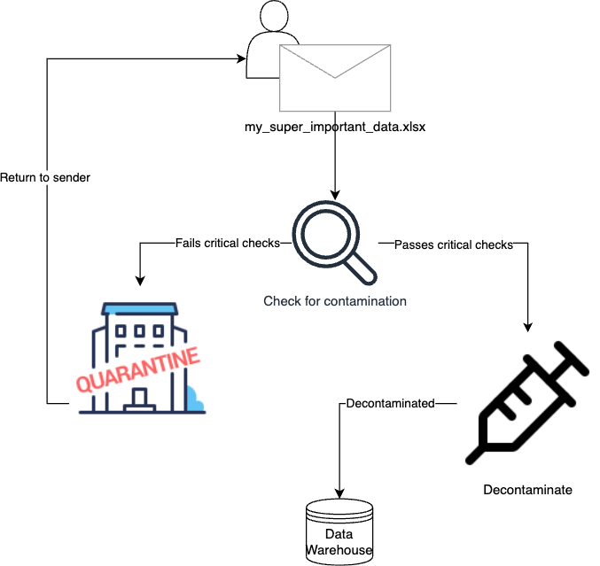

Data engineers deal with data from a variety of sources. Typically, you have very little control over these sources. Best case scenario is the data comes from an API that guarantees schema consistency and data quality to some degree. I love it when data is provided this way - it makes my little data engineer’s heart sing.
Increasingly, however, I’ve come across scenarios in our organization where people (non data-savvy folks) want their data to ingested in our data platform so that it can be integrated with downstream pipelines and applications. I’m all for this because it means our data platform is being used by people other than myself (and machine users). But it introduces data quality issues that you probably didn’t think about before - at least not when you’ve only been pulling data from a pristine third party API.
Here I want to explain my new way of thinking about data that comes from within your own organization. This way of thinking states that you should treat all data that comes from people in your organization as contaminated. Radioactive. Not to be trusted. I call this the data decontamination mindset.
The Situation: Let the people write!
At the airport, we’re still in the early stages of rolling out a self-serve data platform for the organization. It’s mostly used internally so that people can do BI stuff. When we launched the platform, it didn’t really take off as expected. People were reluctant to self-serve1. Instead, they wanted to be able to write their own data to the data warehouse. There were two main reasons for this:
- Sharing data with the organization in a more centralized location.
- Setting up a pipeline where they deposit their data somewhere (e.g., Dropbox, Sharepoint, etc.) and it’s automatically ingested and transformed to be more useful for them.
We certainly weren’t going to allow users free reign to create tables at their whim. But it made sense to have some way for people to contribute so long as it was relevant to the business.
The problem was their data was messy.
It was messy in ways that we never expected it to be. Specifically, there were duplicate records everywhere; but we didn’t check for this and it got entered into the platform anyway and it was only some time later that we uncovered it. Had we checked for problems at the outset we could’ve saved time and headaches.
And for this reason, I changed the way I think about data coming from inside the business. I had to view it as contaminated by default.
Symptoms of Contaminated Data
Contaminated data is another term for messy data, but I think the term ‘contaminated’ helps us to think more critically about what data we allow into our data warehouses. What I call the symptoms of contaminated data are nothing new to anyone who’s thought about data quality2. Some symptoms are more problematic than others. Among the most egregious are the following:
- Duplicated records
- All NA/NULL rows or columns (an indication of non-rectangular data)
- Inconsistent date/datetime formatting (e.g., 2024-07-10, 08-10-24, …)
These are immediate cause for concern because they put into question the accuracy of the data.
Other less obvious markers of contamination of the following:
- Constant columns (e.g., all values are 0)
- Character columns that are almost entirely numeric (could indicate a typo like 1O instead of 10)
- Non human-readable column names3
All these symptoms are typically caused by manual data entry in Excel spreadsheets. We’ve found that people outside of the data team understand their side of the business extremely well, but they unfortunately tend to conflate raw data with presentation. For instance, we regularly see Excel sheets using colours to convey information, the use of summary rows, and metadata/statistics calculated in cells located outside the rectangular structure of the data itself. These kinds of things are fine when you’re presenting data, but they’re a no go for automation.
Quarantine and Decontaminate
The data decontamination process looks like this:

We first check the data for signs of contamination symptoms. If it fails, it goes into quarantine. Quarantined data is in a holding pattern until the owner helps it get better (i.e., by fixing the problems) or a case can be made for allowing exceptions (and it has to be a very strong case).
In our approach, quarantining is a first step to notify us and the owner of problems. Importantly, quarantine involves human intervention - the data team needs to give an ok for it to pass. If it passes the quarantine check, it can move on to the decontamination chamber. This is where we prepare data to be written into the platform such that it follows our conventions. Specifically, it undergoes the following:
- Conversion of column names to snake_case
- Dates and timestamp formats are converted to %Y-%m-%d and %Y-%m-%d %H:%M:%S
- Leading and trailing whitespace is removed
These are relatively minor changes that have very little impact on the data itself.4 The final check is then made when the data is actually inserted into the data warehouse. If the schema is invalid it will prevent data from entering. This is something we get for free because of the nature of the platform, but if we were just writing data to object storage we’d want steps in place to manually check the schema.
So now, after learning from our mistakes we’re starting to ingrain these practices in our data ingestion flows. I’ve developed an internal package called crosscheck to perform the checking steps and decontamination. I’m also looking at integrating our existing pointblank processes into this internal package.5
Data Decontamination Mindset
I’m suggesting to adopt a data decontamination mindset: immediately assume that data is contaminated. I think it is especially important to treat data coming from individuals as contaminated, particularly if the business doesn’t have strong data literacy. We usually can have a bit more trust in data coming from a reputable third-party API, but we should also apply a similar critical attitude in this case too.
Contaminated, poor quality data can have massive impacts downstream, so taking the time to decontaminate your data is critical. Don’t make the mistake I did and blindly trust that it’s all good because it’s coming from a domain expert. In the end, you should always assume the worst but hope for the best.
Footnotes
I’m still grappling with why this is the case, but I think it’s primarily a literacy issue coupled with lack of time and motivation. This blog post by Briefer about the myth of self-serve rings true.↩︎
I make the distinction between data quality which is domain agnostic and data validation which is tied to the business use case. Data quality is easier to determine because you look for the same kind of problems such as duplicated data, schema mismatch, NULL/NAs, etc. However, data validation asks more complex questions such as “do these values make sense given the business context?”.↩︎
This one is trickier and I’m more lax on it. In general, I think column names should be more descriptive and avoid the use of acronyms and abbreviations. Common acronyms in the business are obviously ok (in our case, the acronym IATA is widely understood). That said, if most of the columns are obscure it’s cause to reconsider the naming.↩︎
Data owners are still notified of changes. It may be the case that whitespace is used to differentiate values, but this is a red flag for us. Additionally, if changing column names to snake_case introduces column name duplications or invalid names, we stop and return to sender.↩︎
I use the
pointblankpackage to periodically check the quality of data already in our data warehouse. However, the steps laid out here would primarily be used for data that is preflight.↩︎